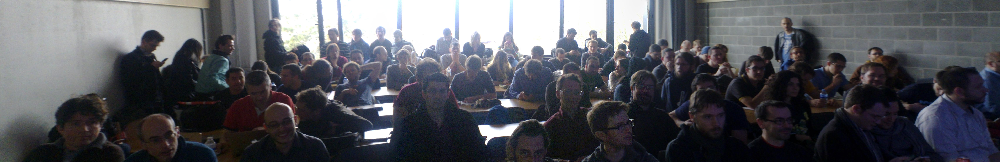
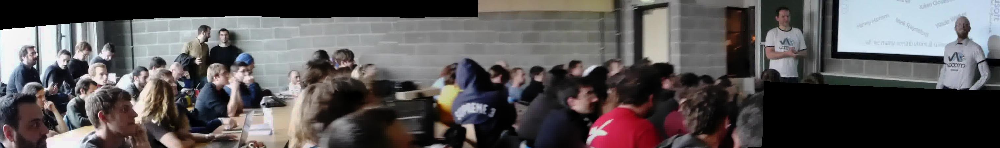
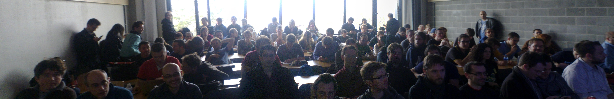
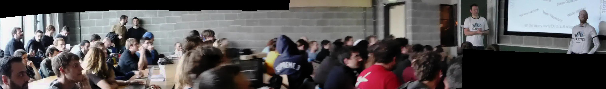

Ji Gong Talk @ FOSDEM 2014, February 1st, 2014, Universite Libre de Bruxelles
Ji Gong: Proposal for High Availability JVM Technology on All Platforms
Media:
Participants (alphabetical order):  
- Slides (pdf)
- Videos
- Full Session (YouTube)
- T-Shirt Design
Participants (alphabetical order):  